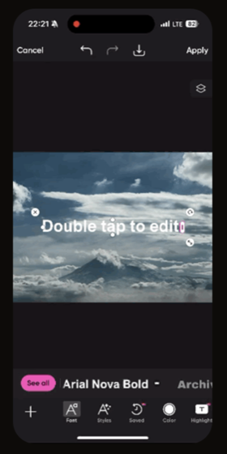
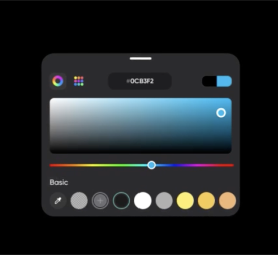

Senior Product Designer
Roupen Babian
Six years of designing digital products at every scale, from early-stage startups to platforms used by hundreds of millions.
Note: This is a draft, not the full portfolio website, the complete portfolio is currently under construction.
Selected work
Picsart / AI design workflows / Design-to-code
AI Playground
Helped creators start a generation, choose a model, and find their work again across a single workspace for images, video, and audio.
- Tools: Figma, Claude code, Claude deisgn, Databricks
- Platforms: Desktop, mobile web, mobile app
Layerswap / end-to-end Redesign
Experience redesign
A backlog of fixes exposed a larger problem with the transfer flow, turned the scope into a bigger redesign and new structure for the app.
- Tools: Figma, Figma Make, Cursor
- Platforms: Desktop, mobile web

Picsart / Experimentation and monetization / UX Pattern
Font Chooser
Redesigned the font chooser so people could try fonts in context, then used three shipped iterations to balance easier browsing with premium discovery,
- Tools: Figma, ProtoPie, User Testing
- Platforms: Mobile app
Systems & Craft
Design system
After the editor redesign, I joined the Design system team and created the Library, Components, Tokens, Documentation, Interaction design

Complex Prototyping
Built a complex prototype for the drawing team at Picsart, a color picking experience, that responded continuously to the user’s actions.